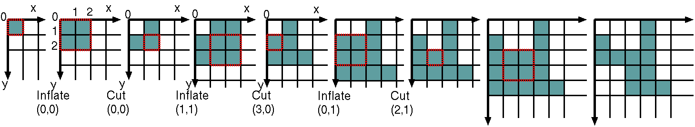

We are considering that the initial northwest corner is placed in (0,0) and that x and y grow as in the figure. INFLATE} (pi,qi) means ``multiplying by 4 the area of the cell'' (i.e. square) whose northwest corner is in (p_i,q_i). For this, we must duplicate the grid line where this cell is located and then duplicate the column where the cell was located. Obviously, we can drag down cells and then drag other cells to the right. The coordinates of the polyomino are also modified: x -> x+1 iff x > pi and y -> y+1 iff y > qi. One cell can only be inflated if it belongs to the polyomino.
The sequence ``INFLATE (pi,qi) CUT (xi,yi)'' means that one must cut the rectangle defined by the points (pi+1,qi+1), (pi+1,yi), (xi, yi), (xi, qi+1). Such rectangle can only be cut if it simultaneously satisfies the following conditions:
(A) it is actually a rectangle and it is part of the polyomino;
(B) (xi,yi) is a vertex of the inflated polyomino and none of the other vertices of the inflated polyomino belongs to the rectangle (either to its interior or boundary);
(C) at least one of the points
(xi,qi+1) and
(pi+1,yi) is in an edge that contains
(xii).
Problem
Your task is to write a program that computes the area of polyominoes
that result from applying a sequence of transformations
INFLATE-CUT to squares of area 1.
Input
The input is a sequence of descriptions of polyominoes's
constructions, ended by 0. Each description starts with an integer
r ≤ 50, which is the number of pairs INFLATE-CUT,
followed by r rows, each one with four integers
pi, qi, xi,
yi, that mean "INFLATE
(pi,qi) CUT
(xi,yi)". Observe that the polyomino
resulting from r INFLATE-CUT's has 2r+4 vertices.
Output
Each line of the output will have the area of the
constructed polyomino or 0 if any step in the construction does not
satisfy the rules just defined.
Sample Input
4 0 0 0 0 1 1 3 0 0 1 2 1 1 2 0 5 6 0 0 0 0 1 1 3 0 0 1 2 1 1 2 0 5 5 5 5 4 3 4 2 2 6 0 0 0 0 1 1 3 0 0 1 2 1 1 2 0 5 4 4 2 3 5 5 5 5 5 0 0 2 2 1 0 1 2 2 1 4 0 0 3 0 0 1 2 3 1 2 0 0 0 1 0 0 2 2 0
12 0 0 18 0